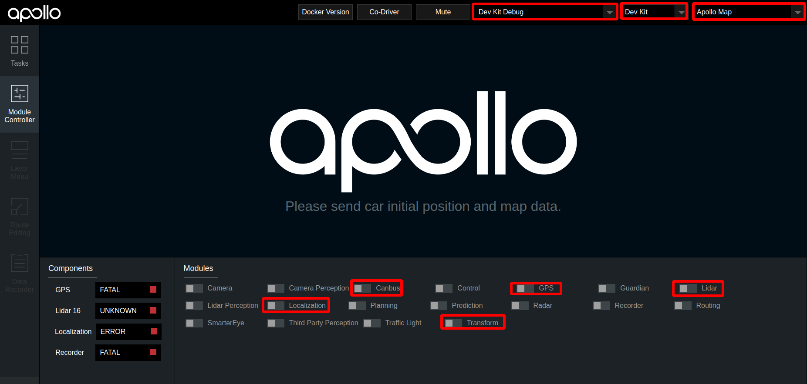
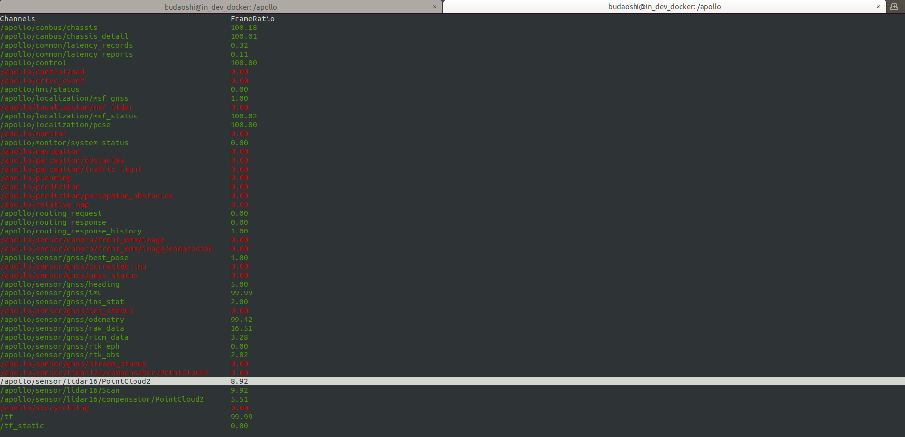
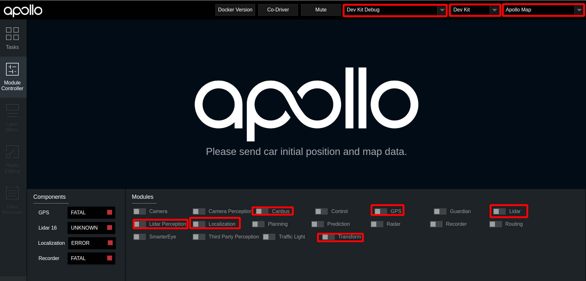
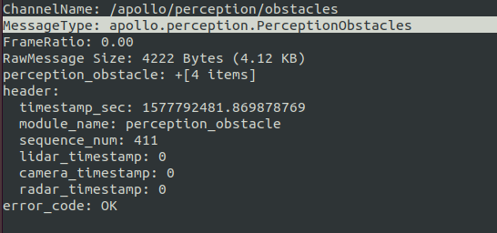

基于激光雷达的封闭园区自动驾驶搭建--感知适配
概览
该用户手册旨在帮助用户完成激光雷达感知适配，实现Lidar感知
前提条件
-
正确完成了循迹搭建--车辆循迹演示
配置文件的修改
| 序号 | 待修改文件 | 修改内容 |
|---|---|---|
| 1 | modules/common/data/global_flagfile.txt |
添加--half_vehicle_width=0.43 |
启动Lidar感知
把车辆开到户外，启动lidar感知
1. 启动can卡
进入can卡目录启动can卡，用以下命令启动
cd ~/SocketCan/
bash start.sh
2. 编译项目，启动Dreamview
进入docker环境，用gpu编译项目，启动DreamView
cd /apollo
bash docker/scripts/dev_start.sh
bash docker/scripts/dev_into.sh
bash apollo.sh build_opt_gpu
bash scripts/bootstrap.sh
3. 启动所需模块
- 在浏览器中打开
(http://localhost:8888)，选择模式为Dev Kit Debug， 选择车型为Dev Kit，在Module Controller标签页启动Canbus、GPS、Localization、Transform模块。
-
定位模块启动后，需要接收定位数据，需要等待约1分钟左右。打开新的终端，并使用
bash docker/scripts/dev_into.sh命令进入docker环境，在新终端中输入cyber_monitor命令查看tf、tf_static、/apollo/localization/pose数据，这三个数据在cyber_monitor中均显示为绿色代表定位模块启动成功
-
在dreamview中启动
lidar模块

4. 检查lidar数据是否正确
-
使用
cyber_monitor，查看是否有/apollo/sensor/lidar16/PointCloud2、/apollo/sensor/lidar16/Scan、/apollo/sensor/lidar16/compensator/PointCloud2三个channel，并使用上下方向键选择channel，使用右方向键查看channel详细数据

5. 启动Lidar感知
在dreamview中启动lidar perception模块，使用cyber_monitor查看/apollo/perception/obstacles是否正常输出，并在dreamview上查看障碍物信息：

验证Lidar感知效果
查看车前方10米处运动的人或者自行车（自行车上要有人），在DreamView上查看障碍物颜色以及位置速度信息（自行车青蓝色，行人黄色，车辆绿色），如下图所示：

/apollo/perception/obstacles的数据如下图所示：


如果在dreamview上能看到障碍物并且/apollo/perception/obstacles有障碍物信息，则开环测试通过。
NEXT
现在，您已经完成激光雷达感知适配，接下来可以开始封闭园区自动驾驶搭建--规划适配
常见问题
1. 感知的输出帧率达不到10帧
- 建议使用
bash apollo.sh build_opt_gpu编译Apollo工程
2. 感知的障碍物位置与实际障碍物误差较大
- 确认localization信号状态，保证
/apollo/sensor/gnss/best_pose中sol_type选项显示为NARROW_INT - 保证各个传感器外参文件准确